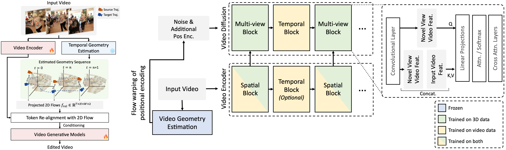

How it Works
Given an input video, we first estimate the camera trajectory and the 3D geomtery of the scene with video geomtery estimators.
By projecting the estimated 3D geomtery onto the desired camera trajectory, we obtain the per-frame 2D flow between the input video and the novel video.
Instead of directly utilizing the rendered frames from the estimated 3D geometry, we ground the video diffusion model on this estimated geometry by
re-aligning the video feature tokens according to the 2D flow.

In the video diffusion model, which consists of spatial and temporal blocks, we enhance the spatial block by integrating tokens provided by the video encoder based on the estimated 2D flow, thereby transforming it into a multi-view block. The tokens encoded by the video encoder are concatenated as key and value inputs within the self-attention layers of the multi-view block in the video diffusion model.